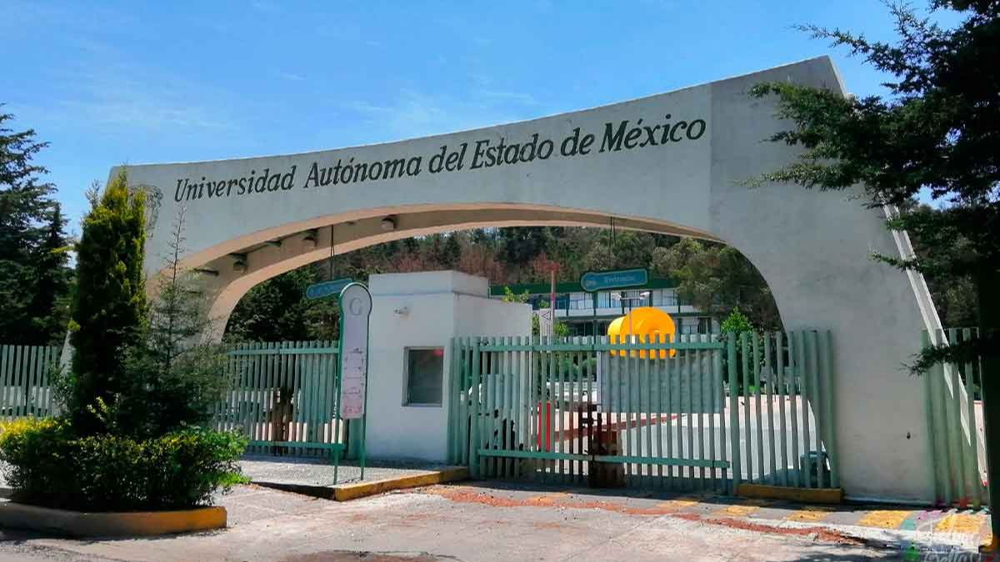
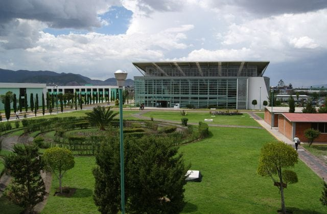
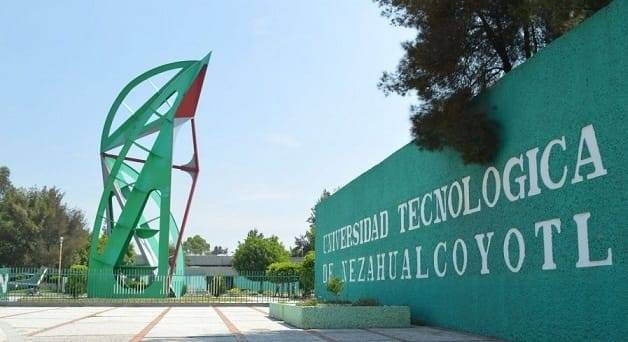
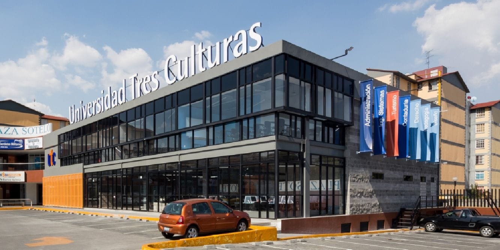
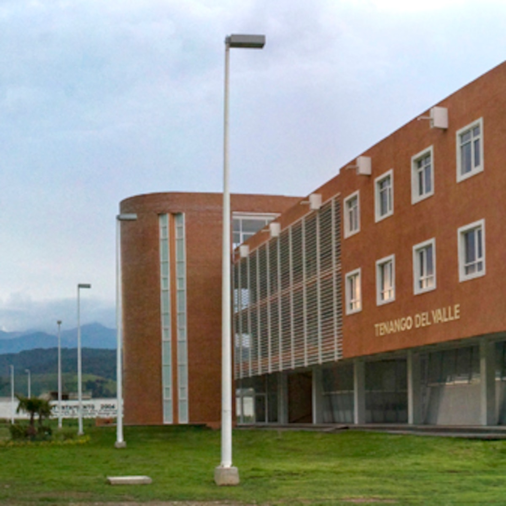
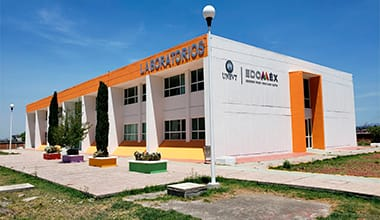
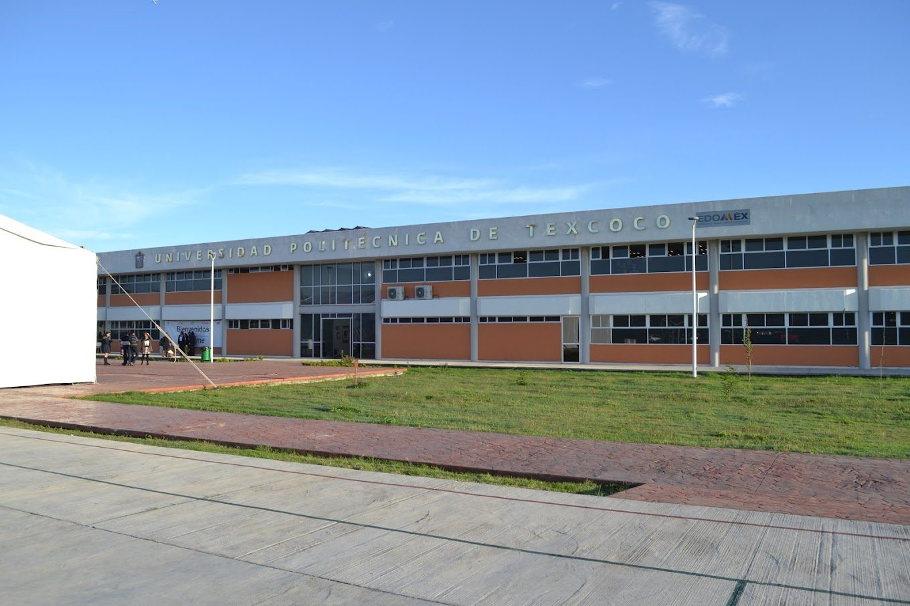
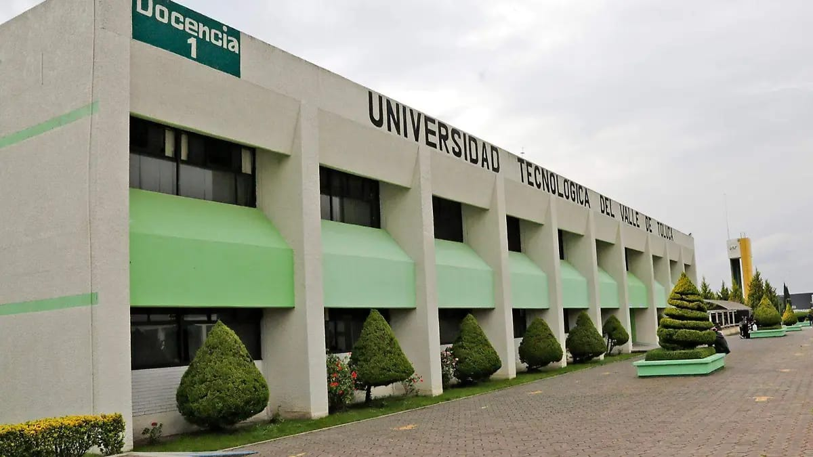
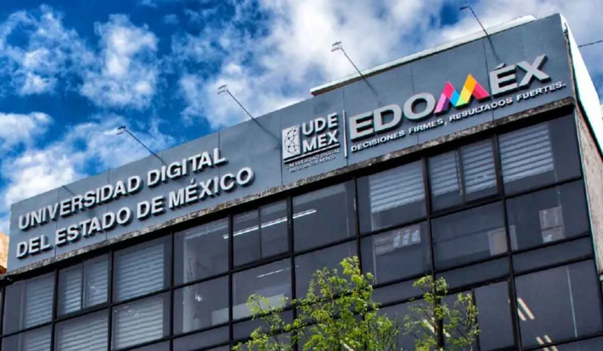
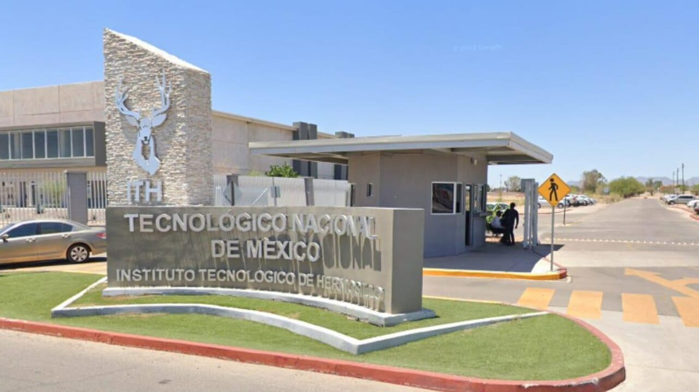

Galería de Universidades












Esta página web fue diseñada para proporcionar información sobre algunas de las principales universidades del Estado de México. Aquí podrás conocer sus programas académicos, requisitos de admisión, categoría y ubicación.
Programas: Medicina, Derecho, Ingeniería y Arquitectura.
Requisitos: Examen de admisión y certificado de bachillerato.
Categoría: Pública.
Misión: Formar profesionistas con calidad académica y compromiso social.
Visión: Ser una universidad reconocida por su excelencia educativa.
Carreras ofertadas:
Programas: Sistemas Computacionales e Ingeniería Industrial.
Requisitos: Examen de ingreso.
Categoría: Pública.
Misión: Formar profesionales competitivos y responsables.
Visión: Ser líder en educación tecnológica.
Programas: Mecatrónica y Tecnologías de la Información.
Requisitos: Certificado de bachillerato.
Categoría: Pública.
Misión: Formar profesionales con valores y competencias tecnológicas.
Visión: Ser referente nacional en educación tecnológica.
Programas: Administración e Informática.
Requisitos: Documentación básica.
Categoría: Pública.
Misión: Ofrecer educación superior de calidad para el desarrollo regional.
Visión: Consolidarse como una institución innovadora.
Programas: Agronomía y Recursos Naturales.
Requisitos: Examen de admisión.
Categoría: Pública.
Misión: Formar especialistas para el desarrollo del sector agropecuario.
Visión: Ser líder en ciencias agrícolas.
Programas: Gastronomía y Mecatrónica.
Requisitos: Certificado y documentos.
Categoría: Pública.
Misión: Formar técnicos e ingenieros altamente capacitados.
Visión: Ser una universidad tecnológica de excelencia.
Programas: Medicina, Arquitectura e Ingeniería.
Requisitos: Solicitud de ingreso.
Categoría: Privada.
Misión: Preparar profesionistas competitivos a nivel global.
Visión: Ser referente internacional en educación superior.
Programas: Medicina, Derecho y Negocios.
Requisitos: Examen y entrevista.
Categoría: Privada.
Misión: Formar líderes de acción positiva.
Visión: Transformar la sociedad mediante la educación.
Programas: Ingeniería, Negocios y Psicología.
Requisitos: Certificado de estudios.
Categoría: Privada.
Misión: Impulsar el propósito de vida de sus estudiantes.
Visión: Ser una institución innovadora y flexible.
Programas: Derecho y Pedagogía.
Requisitos: Documentos oficiales.
Categoría: Privada.
Misión: Brindar educación accesible y de calidad.
Visión: Formar profesionistas comprometidos.
Programas: Administración y Mercadotecnia.
Requisitos: Acta y certificado.
Categoría: Privada.
Misión: Formar profesionistas con responsabilidad social.
Visión: Ser una universidad reconocida por su calidad.
Programas: Ingeniería y Administración.
Requisitos: Examen de ingreso.
Categoría: Pública.
Misión: Formar profesionistas con competencias tecnológicas.
Visión: Ser una institución líder en innovación educativa.









